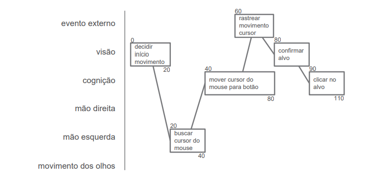
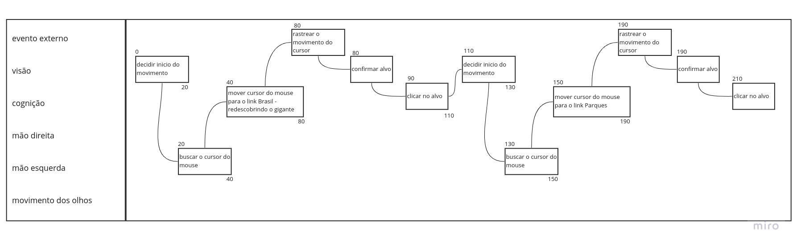

Análise GOMS
1 - GOMS (Goals, Operators, Methods, and Selection Rules)
Card et al. (1983) sugeriram um conjunto de modelos chamado de família GOMS (Objetivos, Operadores, Métodos e Regras de Seleção) com o objetivo de analisar o desempenho dos usuários competentes de sistemas computacionais, realizando tarefas dentro da sua competência e sem cometer erros.
Esses modelos seguem a seguinte linha:
-
Objetivos: Representam o que o usuário quer realizar utilizando o software.
-
Operadores: São primitivas internas (cognitivas) ou externas (as ações concretas que o software permite que os usuário façam, tal como um comando e seus parâmetros digitados num teclado, seleção de menus ou um clique de um botão).
-
Métodos: São sequências bem conhecidas de subobjetivos e operadores que permitem atingir um objetivo maior.
-
Regras de Seleção: Representam tomadas de decisão dos usuários sobre qual método utilizar numa determinada situação.
Uma observação é que a análise se aplica principalmente a situações em que os usuários realizam tarefas que já dominam. Esses usuários não estão resolvendo problemas ou tentando identificar o que precisam fazer em seguida. Essa análise pressupôe que eles sabem o que fazer, e só precisam fazê-lo.
Dentre os modelos da família GOMS, vai ser apresentado e utilizado o KLM (Card et al., 1983), CMN-GOMS (Card et al., 1983) e CPM-GOMS (John e Gray, 1995).
1.1 - KLM (Keystroke-Level Method)
O KLM é uma técnica limitada a um conjunto predefinido de operadores primitivos, sendo eles apresentados na tabela 1. Também inclui um conjunto de heurísticas sobre como posicionar operadores mentais durante a preparação e a estimativa de tempos de exeção pode ser utilizada para comparar ideias em tarefas de benchmark, fazer um avaliação paramétrica para explorar o espaço definido por importantes variáveise fazer análise sobre as suposições (John, 2003). O KLM é a técnica mais simples da família GOMS. Uma observação é que há mais operadores que podem ser usados para a análise, porem foi escolhido os operadores primitivos citados na tabela 1.
| Operador | Operação | Duração Média |
|---|---|---|
| K | Pressionar e soltar uma tecla do teclado | Depende |
| P | Apontar o cursor do mouse num objeto da tela | 1,10 s |
| B | Pressionar ou soltar o botão do mouse | 0,20 s |
| H | Levar a mão do teclado ao mouse ou vice-versa | 0,40 s |
| T(n) | Digitação de cadeia de caracteres | n * K s |
| M | Preparação mental | 1,20 s |
| W(t) | Espera pela resposta do sistema | Depende do Sistema |
Na tabela 1, No operador K, sua duração média está como "depende", pois cada pessoa tem seu tempo para digitar em um computador, mesmo sabendo passo a passo do que vai ser feito, assim na tabela 2 está apresentado a duração média de cada tipo de digitador e posteriormente é escolhido o digitador mediano para fazer as análises.
| Digitador | Duração média |
|---|---|
| Exímio digitador (135 ppm) | 0,08 s |
| Bom digitador (90 ppm) | 0,12 s |
| Digitador mediano (55 ppm) | 0,20 s |
| Digitador inexperiente (40 ppm) | 0,28 s |
| Digitação de letras aleatórias | 0,50 s |
| Digitação de códigos complexos | 0,75 s |
| Digitalizador não familiarizado com o teclado | 1,20 s |
1.2 - Análise de desempenho do web site Brasil Channel com o KLM
Para a análise, vai ser descrita a seguinte tabela, demostrada na tabela 3:
| Descrição | Tempo (s) | ||
|---|---|---|---|
| Método: Tarefa proposta | |||
| Operador | Operação | Tempo | |
| Total | Tempo Total |
Agora são apresentadas as análises de tarefas nas tabelas 4, 5 e 6:
| Descrição | Tempo (s) | ||
|---|---|---|---|
| Método: link Brasil > link Datas Comemorativas | |||
| M | Preparação | 1,20 | |
| H | Levar a mão do teclado ao mouse | 0,40 | |
| P | Levar o cursor até o link Brasil | 1,10 | |
| B | Pressionar o botão do mouse | 0,20 | |
| B | Soltar o botão do mouse | 0,20 | |
| P | Levar o cursor até o link Datas Comemorativas | 1,10 | |
| B | Pressionar o botão do mouse | 0,20 | |
| B | Soltar o botão do mouse | 0,20 | |
| Total | 4,60 |
| Descrição | Tempo (s) | ||
|---|---|---|---|
| Método: link Capitais > link Brasília > link História | |||
| M | Preparação | 1,20 | |
| H | Levar a mão do teclado ao mouse | 0,40 | |
| P | Levar o cursor até o link Capitais | 1,10 | |
| B | Pressionar o botão do mouse | 0,20 | |
| B | Soltar o botão do mouse | 0,20 | |
| P | Levar o cursor até o link Brasília | 1,10 | |
| B | Pressionar o botão do mouse | 0,20 | |
| B | Soltar o botão do mouse | 0,20 | |
| P | Levar o cursor até o link História | 1,10 | |
| B | Pressionar o botão do mouse | 0,20 | |
| B | Soltar o botão do mouse | 0,20 | |
| Total | 6,10 |
| Descrição | Tempo (s) | ||
|---|---|---|---|
| Método: link Municípios > link São Paulo > Link Metropolitana > link Barueri | |||
| M | Preparação | 1,20 | |
| H | Levar a mão do teclado ao mouse | 0,40 | |
| P | Levar o cursor até o link Municípios | 1,10 | |
| B | Pressionar o botão do mouse | 0,20 | |
| B | Soltar o botão do mouse | 0,20 | |
| P | Levar o cursor até o link São Paulo | 1,10 | |
| B | Pressionar o botão do mouse | 0,20 | |
| B | Soltar o botão do mouse | 0,20 | |
| P | Levar o cursor até o link Metropolitana | 1,10 | |
| B | Pressionar o botão do mouse | 0,20 | |
| B | Soltar o botão do mouse | 0,20 | |
| P | Levar o cursor até o link Barueri | 1,10 | |
| B | Pressionar o botão do mouse | 0,20 | |
| B | Soltar o botão do mouse | 0,20 | |
| Total | 7,60 |
As tabelas utilizadas para realizar a análise de tarefas (tabelas de 1 a 3) foram retiradas do livro da Simone. As tabelas de 4 a 6 foram construidas em referência ao mesmo livro.
1.3 - CMN-GOMS
Se refere à proposta original de GOMS (Card et al., 1983), em que há uma hierarquia estrita de objetivos, onde os operadores são executadps estritamente em ordem sequencial e os métodos são representados numa notação semelhante a um pseudocódigo, que inclui submétodos e condicionais. Ao desenvolver um modelo GOMS, devemos definir cuidadosamente o que representar, o que não representar, o nivel de detalhamento em referência ao que se quer analizar e tarefas mentais que estejam relacionadas ao design do sistema devem ser incluídas no modelo (Kieras, 2001). O exemplo 1 demonstra, em lista, um modelo GOMS que será utilizado para fazer a análise neste artefato, retirado do livro da Simone. Lembrando que existe mais modelos GOMS para fazer análise de tarefas.
Exemplo 1 - Modelo GOMS
- GOAL 0: objetivo principal
- GOAL 1: subobjetivo obtido da principal
- METHOD 1.A: opção de método a ser seguido
- (SEL. RULE: a regra de seleção que deve ser satisfeita para se utilizar o método 1.A)
- METHOD 1.B: opção de método a ser seguido
- (SEL. RULE: a regra de seleção que deve ser satisfeita para se utilizar o método 1.B)
- GOAL 2: subojetivo obtido da principal
Para exemplificar, no GOAL 0 é apresentado a tarefa que está sendo analisada, essa tarefa é o objetivo principal, desse objetivo principal é divido em vários outros subobjetivos, para poder separar o objetivo principal e assim adicionando os pedaços até chegar ao objetivo principal, concluindo a análise.
1.4 Análise de tarefas do web site Brasil Channel com o CMN-GOMS
Utilizando o modelo de exemplo apresentado no tópico anterior, foi feita a análise de três tarefas, sendo elas:
- Encontrar o site do Ministério da Educação
- Acessar a lista de parques Nacionais
- Acessar os dados da economia do estado de Goiás
Aplicando o modelo GOMS, temos:
Tarefa 1
- GOAL 0: Encontrar o site do Ministério da Educação
- GOAL 1: Acessar o link Brasil - redescobrindo o gigante
- METHOD 1.A: clicar com o botão do mouse a palavra Brasil
- (SEL. RULE: O usuário conhece que tem um link na palavra Brasil)
- METHOD 1.B: clicar com o botão do mouse a figura representando o mapa do Brasil
- (SEL. RULE: O usuário conhece que tem um link na figura)
- GOAL 2: Acessar o link Sites Governamentais
- METHOD 2.A: clicar com o botão do mouse a palavra Sites Governamentais
- (SEL. RULE: O usuário conhece que tem um link na palavra Sites Governamentais)
- GOAL 3: Encontrar o link da segunda página Sites Governamentais
- METHOD 3.A: clicar a seta para baixo no teclado
- (SEL. RULE: O usuário conhece a posição da tecla)
- METHOD 3.B: usar a barra de rolagem do site
- (SEL. RULE: O usuário sabe onde localiza a barra de rolagem)
- METHOD 3.C: usar o botão scroll do mouse
- (SEL. RULE: O usuário sabe o que é e como usar o botão)
- GOAL 4: Acessar o link para segunda página Sites Governamentais
- METHOD 4.A: clicar com o botão do mouse o link "2"
- (SEL. RULE: O usuário conhece que o 2 é um link)
- GOAL 5: Encontrar o site do Ministério da Educação
Tarefa 2
- GOAL 0: Acessar a lista de parques Nacionais
- GOAL 1: Acessar o link Brasil - redescobrindo o gigante
- METHOD 1.A: clicar com o botão do mouse a palavra Brasil
- (SEL. RULE: O usuário conhece que tem um link na palavra Brasil)
- METHOD 1.B: clicar com o botão do mouse a figura representando o mapa do Brasil
- (SEL. RULE: O usuário conhece que tem um link na figura)
- GOAL 2: Acessar a lista de parques Nacionais
Tarefa 3
- GOAL 0: Acessar os dados da economia do estado de Goiás
- GOAL 1: Acessar o link Estados - desmembrando o conhecimento
- METHOD 1.A: clicar com o botão do mouse a palavra Estados
- (SEL. RULE: O usuário conhece que tem um link na palavra Estados)
- GOAL 2: Acessar o link Goiás
- METHOD 2.A: clicar com o botão do mouse a palavra Goiás
- (SEL. RULE: O usuário conhece que tem um link na palavra Goiás)
- METHOS 2.B: clicar com o botão do mouse a palavra "GO" na figura do mapa do Brasil
- (SEL. RULE: O usuário conhece que tem um link na palavra GO no mapa)
- GOAL 3: Acessar os dados da economia do estado de Goiás
1.5 - CPM-GOMS
Foi assim designado por dois motivos: - Representar operadores cognitivos, perceptivos e motores - Seguir a abordagem de Critical Path Method (técnica de análise de caminho crítico).
É uma versão do GOMS baseada diretamente no pressador humando de insformações e. portanto, no modelo de estágios paralelos de processamento do processamento humano de informações. Isso significa que o CPM-GOMS não supõe uma sequencia de execução dos operadores e sim que operadores cognitivos, perceptivos e motores podem se tornar paralelos conforme a tarefa realizada. Utiliza um diagrama do tipo PERT para representar os operadores e as dependências entre eles. Nessa análise, o caminho crítico fornece uma previsão simples do tempo total da tarefa. A construção é feita a partir da análise CMN-GOMS, em que os operadores criados são classificados em cognitivos, perceptivos e motores do MHP. Assim, é atribuido então uma duração estimada a cada operador e calculamos o tempo de execusão previsto para a tarefa. è possível efetuar uma análise qualitativa da relação entre aspectos do design e o tempo de execução, bem como fazer simulações de designs alternativos e ajudar a identificar por que um terá desempenho melhor que o outro. E, assim como o KLM e CMN, o CPM-GOMS assume que o usuário é experiente e executa as tarefas de maneira rápida e eficiente, ou seja, sabe exatamente onde procurar visualmente um determinado item de informação e que não tem atividades cognitivas substanciais associadas à decisões complexas ou seleção de métodos.
A figura 1 apresenta um modelo de CPM-GOMS:

1.6 - Análise de tarefas do web site Brasil Channel com o CPM-GOMS
Foi feita a análise utilizando o modelo CPM-GOMS (com algumas modificações no design) da figura 1 em referência a análise da Tarefa 2 (apenas) apresentada no tópico CMN-GOMS, a seguir é apresentado a figura 2 do resultado da análise:

Histórico de Versão
| Versão | Alteração | Responsável | Revisor | Data |
|---|---|---|---|---|
| 1.0 | Criação do documento | Levi Queiroz | - | 20/07/2022 |
| 1.1 | Adição do KLM, CMN e CPM | Levi Queiroz | Lucas | 20/07/2022 |
Referências
- BARBOSA, Simone; DINIZ, Bruno. Interação Humano-Computador, Editora Elsevier, Rio de Janeiro, 2010.